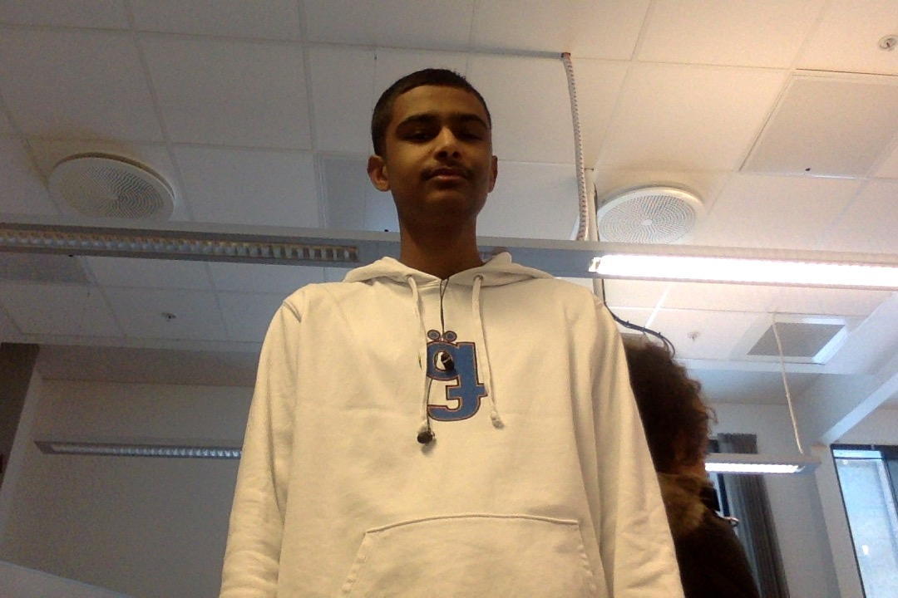

Aden Krohn

"Aden" er et livsfarlig dyr som må kontrolleres med ytterst forsiktighet. Han sprer en livsfarlig mengde negativitet, som er yttrst deprimerende. For å jevne ut negativiteten han sprer, må du selv være veldig positivt. Aden kan også bli svært voldelig, noe som gjør han til både en mental og fysisk trussel. Han har også et mindre kjent våpen som han bruker, nemlig barten hans. Denne brukes til både til å skremme bort andre hanndyr, men også til å tiltrekke eventuelle hunndyr.
Dette individet trives best på sofaen, han spiller ofte FIFA som han ofte gjør i timen også.
Generell informasjon:
- Alder : 16
- Høyde : 1.78m
- Vekt : 64kg
- Hårfarge : Svart
- Sivilstatus : Ukjent
- Først observert : 20. August 2018
- Mental styrke : Sterk
- Styrker : Negativ, skremmer med barten
- Svakheter : Positivitet
- Jobb : Vaskehjelp
- Naturlig habitat : Dyrehagen
- Skalering av dyriskhet : 9